Chapter 01
世界觀：翠嶺大陸與黑焰
《發條之心》的舞台是翠嶺大陸。魔王敗後二十年，你是傭兵團最弱的新人。兔子是弱小象徵，不是預言選民。
 主角小白 —— 全作美術的基準，也是整個旅途的視角
主角小白 —— 全作美術的基準，也是整個旅途的視角
世界一句話
無名魔王以黑焰吞噬野心者為爪牙；五方聖獸以自身為錨將魔王封於中央法師之塔。卷軸寫至弱——團裡信的是你走到這裡的腳印。
核心規則：黑焰嗜野心——越強、越貪越易被侵蝕。弱不是賣萌，是不把心餵給焰。
六域結構
地理上是「五柱＋中央塔」。旅途從騎士堡壘方向開始，再經六域岔路自由選序；終點始終是法師之塔。
[遊俠森林 · 疾影]
|
[維京海岸] — [法師之塔] — [騎士堡壘 · 雷歐]
石拳 | |
[忍者村 · 白霧]
|
[武鬥道場 · 阿波]
 騎士堡 · 榮譽與鏽劍的起點
騎士堡 · 榮譽與鏽劍的起點
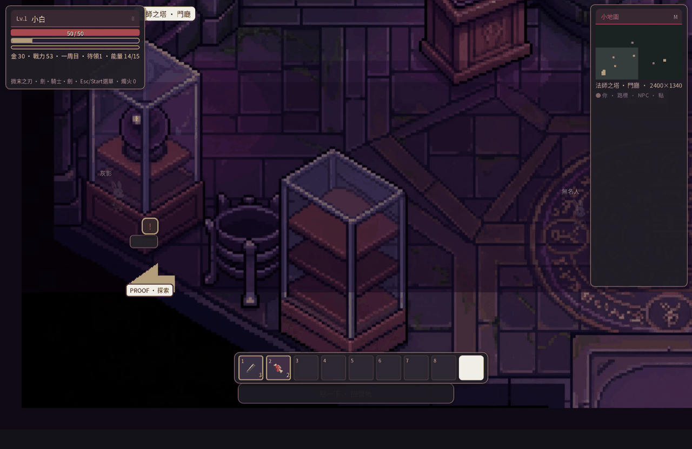
法師之塔 · 終焉與回憶層層
你會遇見誰
- 釘釘 —— 鐵匠，養「器」的入口
- 星讀 —— 聚魂殿，養「魂」的入口（抽魂＝聚魂）
- 各域鎮民、商販、守塔學徒與殘存騎士
- 五方聖獸（Boss）：悲劇守護者，不是單純反派
遊玩節奏：不連線也能走完整趟。連上之後多的是雲端存檔與旅人交會，不影響你能不能走到最後。
Chapter 02
操作與介面
探索是俯視可捲動地圖；戰鬥為即時節奏。全程直覺觸控走位，雙拇指單手皆可流暢操作。
 標題畫面 · 從這裡開始或讀取存檔
標題畫面 · 從這裡開始或讀取存檔
基本操作
| 操作 | 作用 | 備註 |
|---|
| 點地面 | 走過去 | 自動繞開牆與建築；點擊處有光圈回饋 |
| 點 NPC／寶箱／路標 | 走到旁邊自動互動 | 不用再按任何鍵 |
| 點擊（戰鬥中） | 格擋／躍出／連招 | Boss 高光操作，看準倒數變綠 |
| 點對話框 | 推進對話 | 第一下跳滿字、第二下換行 |
| 選單鈕（快捷欄尾端） | 選單 · 裝備 · 連線 · 顯示設定 | 暫停旅程；閒置提示列會顯示「下一站」 |
| 滑動／手勢 | 視野拖曳與快捷展開 | 雙拇指熱區操作，防誤觸大按鈕 |
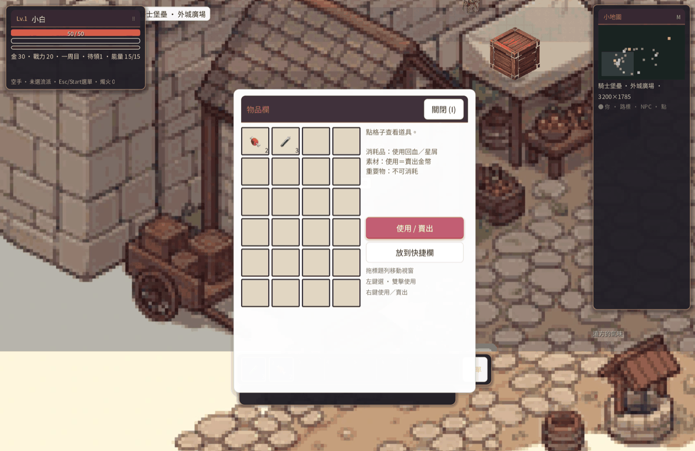
物品欄與裝備外觀
 流派選擇畫面（騎士堡後）
流派選擇畫面（騎士堡後）
選單裡值得常開的頁
- 裝備 —— 武器／防具／飾品；換裝會反映在探索立繪疊層
- 戰魂 —— 抽魂後嵌入或拆下戰魂
- 任務 —— 主線與長遠任務進度
- 顯示設定 —— 全螢幕、解析度、垂直同步（存於本機）
小白提示：第一次進騎士堡前，先在安全區多按幾次 J 抓一下時機，之後打雷歐會輕鬆很多。
Chapter 03
前 30 分鐘：出村到初鍛
這半小時決定你對節奏的手感。照清單勾完，通常就能穩穩進六域岔路。
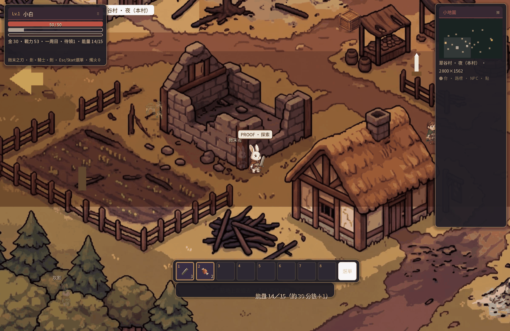
餘燼村 · 旅途真正的起點
建議流程
- 餘燼拾劍 —— 聽完開場、拿到第一把武器，熟悉移動與對話。
- 荒路首戰 —— 路上雜魚練普攻與閃避節奏；不必硬衝，可繞道。
- 騎士堡 · 釘釘 —— 初鍛一階，體感攻擊與耐久都會上來。
- 選擇武器流派 —— 十選一；不確定可先做第 5 章測驗。
- 星讀 · 抽魂 —— 走進聚魂殿點亮葫蘆。
- 演武場 —— 安全練招與熟練，不必耗野外藥水。
- 野外材料 —— 為下一次鍛造存一點料；市集也可補。
- 六域岔路 —— 鍛造後可自由選下一域；Boss 依戰力自訂順序。
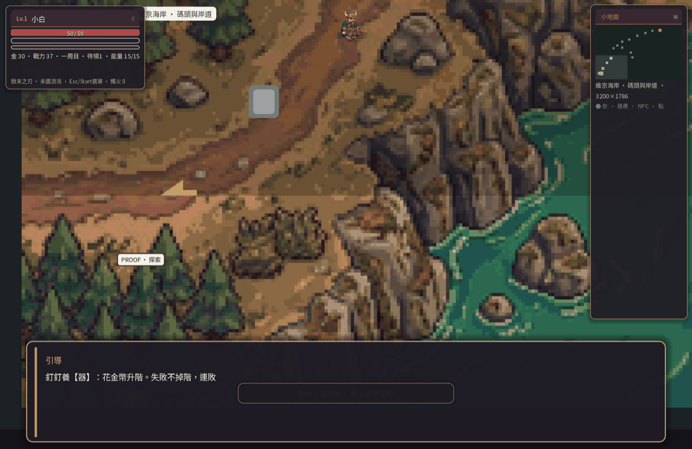
釘釘的工坊
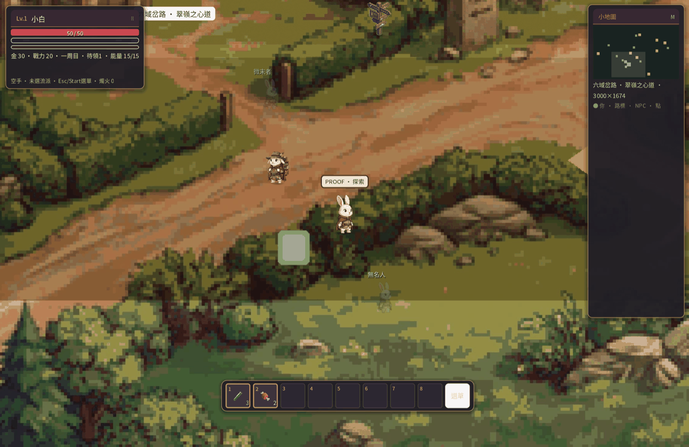
六域岔路 · 自由選下一站
節奏建議：第一次打雷歐前，武器至少鍛過、招式熟練有一點等級、身上帶回復道具。不必練到全滿，中等程度就打得動。
Chapter 04
器 · 魂 · 招
《發條之心》的養成分三條線，可以同時養。武器流派跟這三條是分開的：流派決定打起來的感覺與被動；器、魂、招則能疊在任何流派上，換武器之後戰魂還能拆下來裝到新刃上。
 器 · 鍛造升階
器 · 鍛造升階
 魂 · 聚魂殿抽魂
魂 · 聚魂殿抽魂
器 · 鍛造
找釘釘升武器階。材料來自野外掉落與琥珀材料行。失敗不會掉階——可以大膽嘗試，只是耗料。
- 優先把主手武器養到當前章節約略同階
- 防具次之；飾品走的是特殊效果，不必硬求
- 鎚流派鍛造成功率暗中高一點（適合穩紮路線）
魂 · 抽魂／聚魂
走進聚魂殿點亮葫蘆（綠→橙）。主代價是金幣＋每日免費；星屑是路上的光。戰魂可嵌可拆；神品質最高 10 級。
- 遠距流派（弓／銃／法）常偏暴擊或技能向
- 近戰坦克（鎚／晶）常偏血防
- 秘境 Boss 有唯一魂器，已持有再打改掉星屑
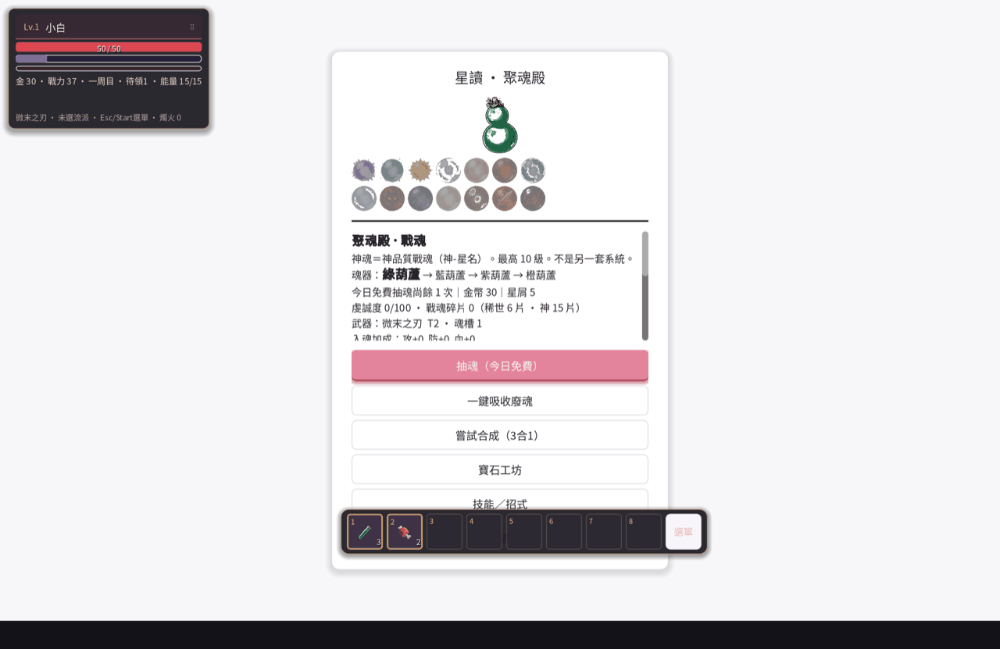
戰魂／抽魂相關介面
招 · 技能熟練
戰鬥與演武場累積熟練、自動升級。不同武器流派解鎖對應招式線；危急時有緊急恢復類招，後期則有高倍率怒氣技。
怎麼疊？ 例：選弓（遠距），配偏暴擊的戰魂，再加上鍛造升階與招式熟練。之後改用槍也不怕，戰魂拆下來裝到新武器上就好，養成不會整組報銷。
官網養成頁
Chapter 05
十種武器流派 · 互動測驗
流派決定打起來的感覺與被動，跟器／魂／招是兩回事，互不干擾。沒有廢流派，只有適不適合你現在的打法與想挑的 Boss。
 十刃各有脾氣 —— 先選「想怎麼打」
十刃各有脾氣 —— 先選「想怎麼打」
速覽
| 流派 | 定位 | 一句話 |
|---|
| 劍 · 劍士 | 均衡 | 新手友善，裝備線最完整 |
| 弓 · 遊俠 | 遠距暴擊 | 保持距離，等破綻 |
| 法 · 星法 | 技能倍率 | 與抽魂戰魂協同最佳 |
| 拳 · 拳師 | 攻速破防 | 貼身連打，適配阿波 |
| 斧 · 斧衛 | 重擊 | 一擊要有重量 |
| 鎚 · 鎚守 | 坦克 | 站到最後，鍛造穩 |
| 長槍 · 槍騎 | 中距迎擊 | 比劍更長的一步 |
| 火槍 · 火銃 | 爆發 | 一響定生死，容錯低 |
| 鏢 · 影鏢 | 高速看破 | 適配白霧節奏 |
| 水晶 · 晶使 | 防血輔助 | 護體與魂槽親和 |
可換嗎？ 可以。流派不是永久鎖定人生；但招式熟練會跟著當前武器線走，建議主線中前期定一條主修，支線再玩第二把。
Chapter 06
裝備、外觀與鍛造
裝備不只加數值——武器、防具、飾品會疊在小白身上，探索時就能看見「我變強了」的外觀回饋。
裝備面板 · 圖示格與疊層外觀
部位概念
武器
由流派決定起始武器；鍛造升階改傷害與 thr。探索時右手（或對應位置）會顯示對應武器圖層。
防具
布／皮／板／紗等類型影響防禦與外觀色調。想耐打就優先板甲；法與弓通常穿輕甲換機動。
飾品
墜飾、戒指等補特殊傾向（暴擊、續航、抗性）。不必強求同階，有特效就先用。
鍛造節奏
- 材料夠 → 釘釘嘗試升階
- 失敗不掉階 → 補料再試
- 大章節 Boss 前做一次「主手＋防具」檢查
- 秘境與寶箱會掉較稀有胚，記得對圖鑑
 範例：微末刃（劍起始線）
範例：微末刃（劍起始線）
 範例：騎士板甲
範例：騎士板甲
圖鑑：官網有完整裝備圖鑑與篩選，可對照掉落與鍛造目標。
打開裝備圖鑑
Chapter 07
六域巡禮
每個主域都有風土、地標與對應聖獸氣味。鍛造後從岔路出發；順序可依流派與戰力自訂。材料從哪張地圖來，見 地圖誌。
騎士堡壘 · 雷歐
石城、榮譽、旗幟。門衛城、市集、演武場、內殿前院。主線早期必經，劍盾氣味濃。
聖獸：雷歐（獅）鍛造／演武
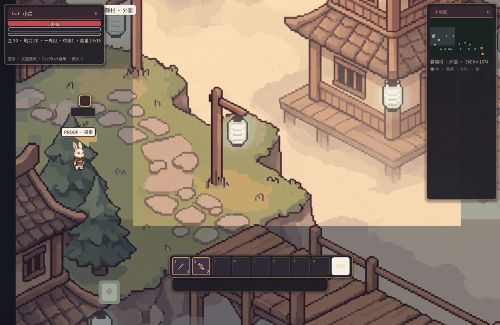
霧隱村 · 白霧
霧、影、真假。霧祠、鏡廊、霧崖。看破節奏的課堂；鏢與弓都很吃香。
聖獸：白霧（狐）鏡廊秘境

武鬥道場 · 阿波
山門、拳理、茶。竹林與山巔試煉。破防灌條與貼身連段的試金石。
聖獸：阿波（熊貓）拳／斧友善

遊俠森林 · 疾影
密林、風、箭道。樹冠、靜湖、遺址。遠距與「等停拍」的練習場。
聖獸：疾影（隼）弓友善

維京海岸 · 石拳
浪、火、蠻勇。碼頭、潮汐洞、沉船灣。重擊與落岩安全區。
聖獸：石拳（豕）沉船秘境
法師之塔 · 終焉
黑焰、螺旋階、回憶層。塔下營地整備後再上；終局與誘惑並存。
魔王意志通關向
樞紐：岔路 · 行商 · 星落 · 疤地
六域岔路連各域；行商驛站補貨；星落平原與黑焰疤地藏秘境與長遠任務。
秘境 Boss ×3寶箱／稱號
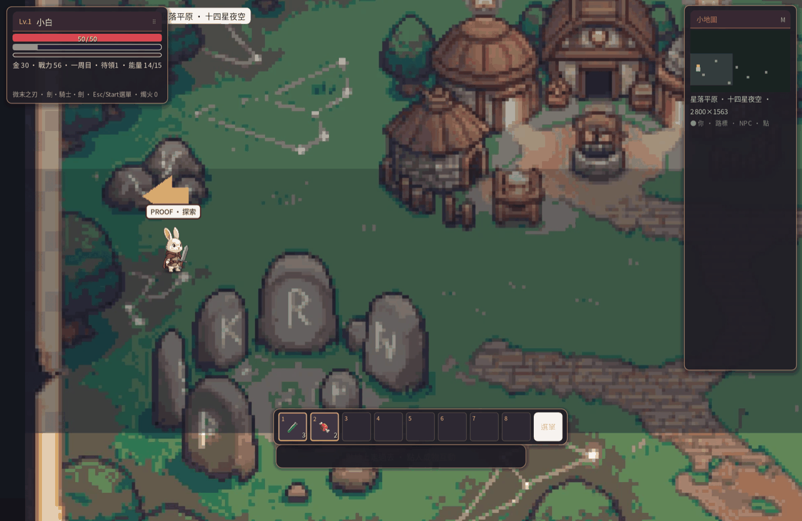
星落平原
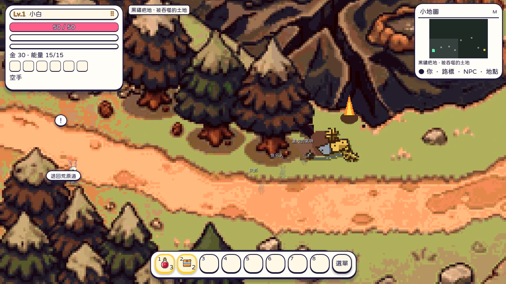
黑焰疤地
Chapter 08
Boss 試煉攻略
雜魚多半靠走位與普攻即可；Boss 則要求讀招、格擋、選窗口。點開摺疊看詳細提示（會記住你展開過哪些）。
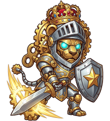
聖獸試煉 —— 悲劇守護者的一戰
雷歐（獅）· 騎士堡
記住：王者斬倒數時用 J 格擋。這是整作第一個「時機高光」，練會了後面都好說。
- 建議：主手有鍛、身上有回復、先在演武場熱手
- 適配：劍、槍、鎚（容錯）；火槍需極熟距離
- 失敗了別灰心——機制比數值更重要
白霧（狐）· 霧隱
記住：分身與真假同色——等本體發白再打，亂砍會空招被反打。
- 適配：鏢、弓、法（看破與距離）
- 鏡廊秘境可另練「殘影」手感
阿波（熊貓）· 道場
記住：用技能灌破防，別只普攻磨血皮。
- 適配：拳、斧；鎚能硬吃但時間長
- 道場山巔空間較開，走位空間足夠
疾影（隼）· 森林
記住：等停拍，別追殘影。追風會被風打。
- 適配：弓、槍、火槍（遠距點窗口）
- 近戰要預判落地點，而非黏著模型跑
石拳（豕）· 海岸
秘境三王 · 疤主／鏡影／船長
非主線必打，但掉唯一魂器與稱號。
- 黑焰疤主 → 疤焰心核（攻高）
- 鏡廊殘影 → 真影裂片（防血）
- 沉船船長影 → 船長潮骨（血高均衡）
- 已持有再打改掉星屑；入槽：Esc → 戰魂
塔頂 · 終局提示（輕雷）
整備、回復、確認戰魂與招式。終局更考「心」與整輪旅途的成熟度——若卡關，回頭清秘境與鍛造通常比硬撞有效。
Chapter 09
戰鬥節奏與招式
本作戰鬥是即時的：走位、普攻、技能與 J 鍵時機同一個呼吸裡完成。雜魚「自己會呼吸」；Boss 才要求你讀秒。
 戰鬥畫面 · 保持冷靜比猛按有用
戰鬥畫面 · 保持冷靜比猛按有用
通用循環
- 靠近或拉開 —— 依流派決定站位
- 普攻填節奏 —— 不要只站樁等大招
- 技能穿插 —— 破防、範圍、爆發看窗口
- J 應答 —— 格擋／躍出／連招，Boss 紅字前預判
- 危急回血 —— 藥水或緊急恢復招，別存到死亡畫面
怒氣與高倍率技
部分強技需要怒氣或長冷卻。雷歐後解鎖的路線常有「滿怒優先」的重擊——存滿再開，不要零碎放掉。
演武場的價值
零風險練熟練、測新武器手感、練習 J 的時機。換流派後第一件事：回來打木人。
常見失誤
- 追模型而不是預判落點（疾影）
- Boss 前不鍛、不帶藥
- 遠距流派被貼身還硬站（該跑就跑）
- 把 J 當普通攻擊鍵狂按
Chapter 10
支線、秘境與日常
主線之外，翠嶺還有寶箱、長遠任務、狩獵與秘境。不必全清也能通關；想變強或收集稱號時再來。
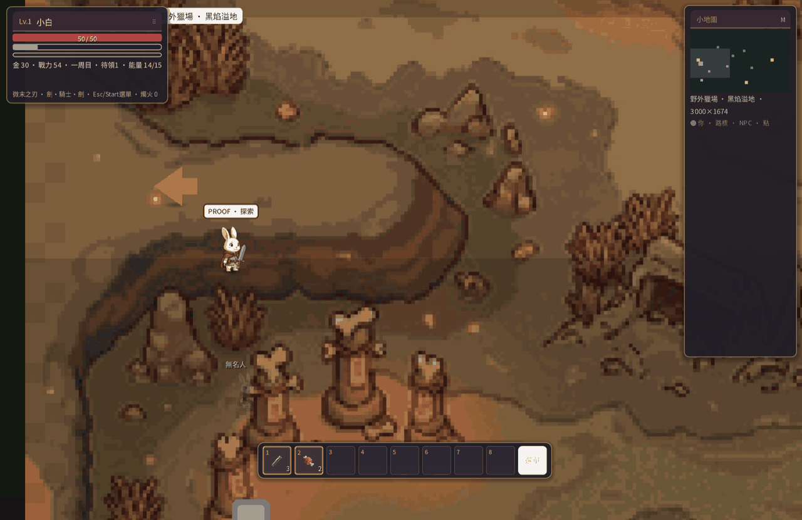
狩獵相關場景
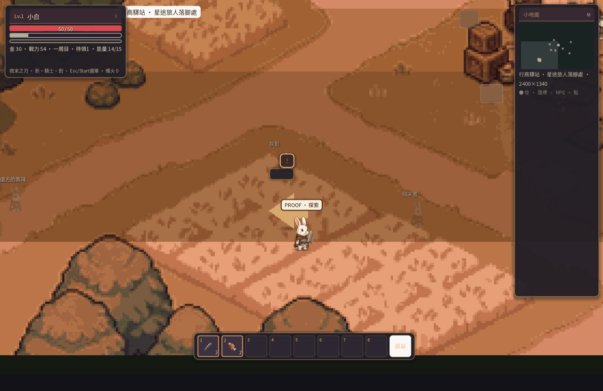
行商驛站 · 補貨與情報
值得做的事
- 寶箱 —— 古驛、沉船、市集、疤地等單次戰利，常有胚子與材料
- 長遠任務 —— 拾荒、漫遊、雜魚勝、三秘境等，任務面板可領
- 稱號 —— 疤地行者、破鏡之人、沉船終結者、翠嶺漫遊者、拾荒兔…
- 市集／琥珀行 —— 缺料時用金錢換進度
- 對話 —— 淨化聖獸後，該域 NPC 台詞與氣氛會變
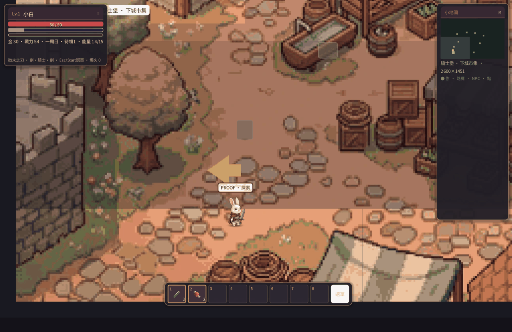
騎士堡市集
時間不夠時：主線優先 → 當前域寶箱 → 卡關再秘境魂器。不要為了「全收集」卡在序章。
Chapter 11
連線、帳號與下載
一個人也能把整趟走完。帳號帶來的是雲端進度、旅人交會與社群身分，不是走下去的條件。
 旅途可以是一個人的；也可以在營火旁等多一位旅人
旅途可以是一個人的；也可以在營火旁等多一位旅人
你可以怎麼玩
純離線
下載後直接玩。存檔在本機。適合地鐵、飛機、只想沈浸劇情的夜晚。
登入之後
官網帳號頁可登入。部分 OAuth 需營運完成後台設定；信箱魔法連結為主路徑之一。
下載
提供 Windows、macOS、Linux 打包。版本號以下載頁為準；更新後建議看一遍顯示設定（全螢幕／解析度）。
前往下載
帳號
隱私與安全：不要在公開場合分享完整存檔若含個人暱稱；連線時使用你信任的網路。官方不會私訊要你的密碼。
Chapter 12
進階技巧與 FAQ
通關後或卡關時翻這章。若你的問題不在這裡，歡迎到社群回報——附版本號與截圖會更快。
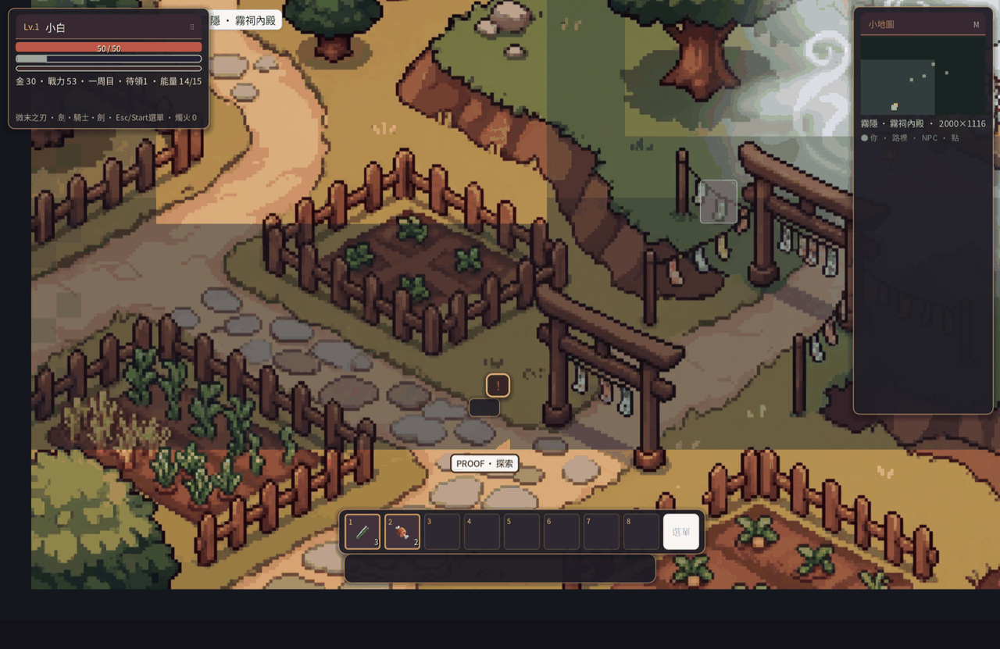
霧祠 —— 有時答案在重走一次舊路
進階小技巧
- 雙修思維：主修近戰清圖，切遠距打特定 Boss，再切回來（注意招式熟練分流）
- 魂器輪換：依下一場 Boss 換暴擊／血防魂，不要一套用到塔頂
- 岔路回補：每清一域回騎士堡鍛造＋星讀，比在野外裸奔有效
- 顯示：筆電建議開垂直同步；打架飄忽時先查幀數與全螢幕
- 存檔習慣：大 Boss 前手動確認；換裝置前若有雲端再登出
FAQ
卡關了，是不是一定要換流派？
多數情況是鍛造／藥水／機制不熟。先對第 8 章 Boss 提示打勾檢查，再考慮換刃。
鍛造一直失敗？
失敗不掉階。補材料再試就好；用鎚的成功率會高一些。也可以先把防具升起來，容錯高一點再戰。
畫面與小白比例怪／穿模？
請更新到官網標示的最新版。0.14 起地圖與角色以 chibi 風格鎖定；舊快取少見，重裝通常可解。
一定要連線嗎？
不用。主線離線完整可玩。
Mac 打不開？
若遇系統封鎖未簽名應用，可在系統設定中允許，或見下載頁說明。仍失敗請回報系統版本。
進度條怎麼重置？
本攻略閱讀進度存在瀏覽器 localStorage。清站台資料即重置；不影響遊戲存檔。
延伸閱讀
你已走到攻略盡頭。 真正的塔在遊戲裡。團裡最弱的那個，迎上去。